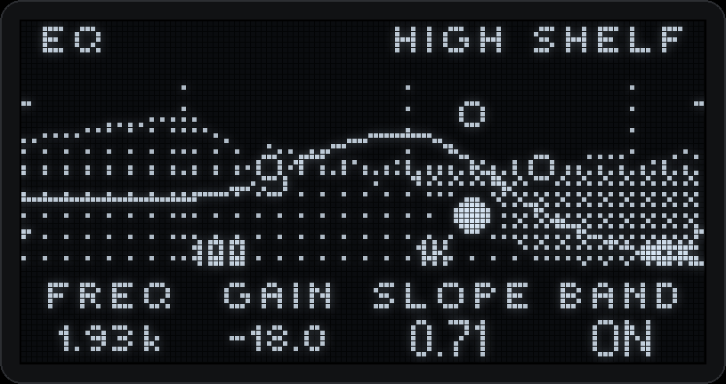
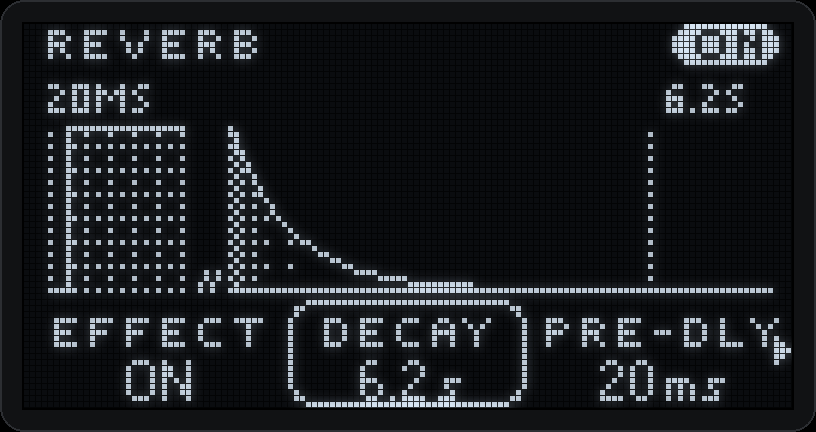
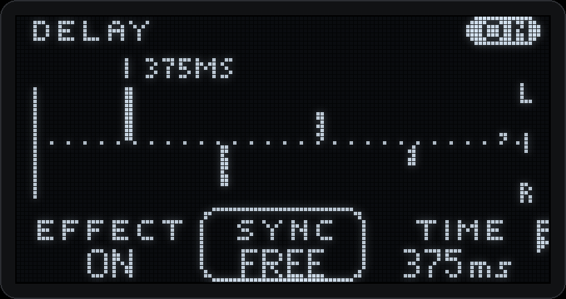
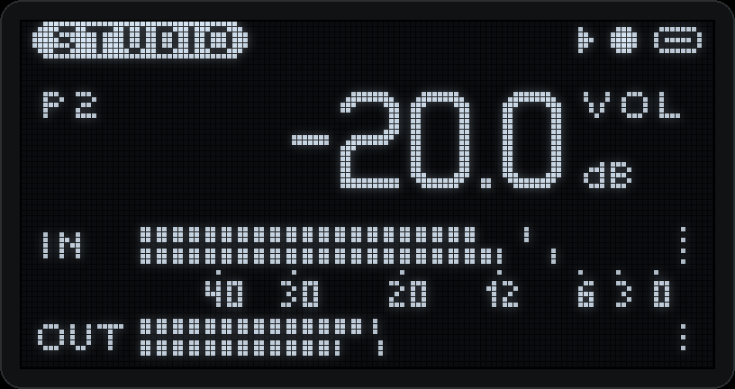
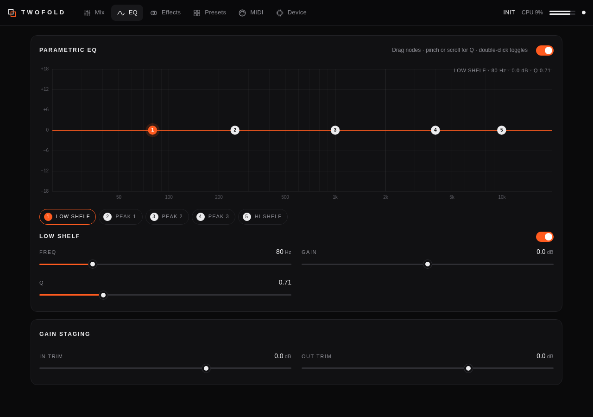

USB sound card · ESP32-S3
TWOFOLD
A small USB sound card with an effects rack inside, a little screen and one knob.
Plug it in and it shows up as a stereo audio interface and a MIDI port, with nothing to install. Version 1.0.2, for testers · GPL-3.0.
What it does
No driver
Stereo in and out at 48 kHz / 24-bit, plus a MIDI port, over one USB-C cable. It uses the audio driver already in Linux, macOS and Windows.
Effects in the box
Five-band EQ, saturation, chorus, delay, plate reverb and a compressor, then a limiter that keeps the output from clipping.
One knob, one screen
Turn for volume, press for the menus. The EQ draws its real curve over a live spectrum, and every effect has its own animation.
An editor over the cable
Every setting, the meters, eight presets and the MIDI map, in Chrome or Edge over USB. No WiFi, no app.
Hear yourself at once
Direct monitoring mixes the input into the output without the trip through the computer, dry or through the effects.
Quiet by default
WiFi and Bluetooth stay off until you ask for them. Every parameter has a MIDI CC; Bluetooth MIDI is there if you want it.
TWOFOLD runs on the ESP32-S3 SuperMini kit, the same board as Samplooler, the looper you play by tilting it. One built board can be flashed as either, and back again. RING, a Raspberry Pi instrument, picks a TWOFOLD up automatically as its sound card when one is plugged in.
Screens




Flash it
From the browser
- Use Chrome or Edge on a computer. Phones cannot do this.
- Hold the board's BOOT button while you plug it in, then let go. The running firmware uses the USB port for audio, so the browser only finds the board this way.
- Press the button below and pick the port.
- When it says done, unplug and plug in again. It may say the device was lost; that is normal.
Then
Your computer shows an audio device and a MIDI port called TWOFOLD. Pick it for input and output and set the sample rate to 48 kHz.
On the kit board the input is a microphone on the left channel: set GAIN → INPUT → LEFT to hear it in both ears.
Erasing the board first is optional. The same image is on the releases page, written at offset 0x0 with esptool; the README has the command.
The editor
Over the USB cable
Every setting, the meters, presets and the MIDI map. Open it in Chrome or Edge with TWOFOLD plugged in and press Connect over USB.
On Linux, install the udev rule once, then replug. Windows and macOS should need nothing, but are not tested yet.
Open the editor
Get one
Buy one
Built by hand in Haifa. There is no list price: write and ask about price and shipping. Same board as Samplooler, so ask for either, or both.
Email WhatsAppBuild it in the workshop
7 meetings · MEZO, Haifa · 2,200 ₪ · kit included
Up to 8 people, with 4 hours a week of open lab between meetings. Build the ESP32 board yourself and leave with a box that runs both TWOFOLD and Samplooler.
The workshopBuild it yourself
Everything is open: firmware, editor, parts list, wiring, a case design. A board built from the kit's assembly guide runs TWOFOLD unchanged.
Status
Version 1.0.2, for testers. Tested on the SuperMini board under Linux: audio in and out, MIDI, two hours of playback with no dropouts, WiFi and Bluetooth together, updates with automatic rollback.
Not tested yet: Windows and macOS, the stereo line input (PCM1808), noise and distortion through real converters, the printed case. Reports are welcome in the issues.